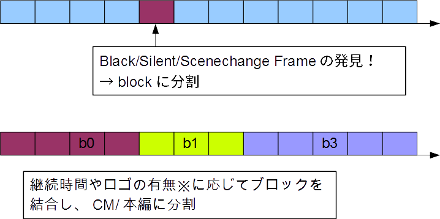
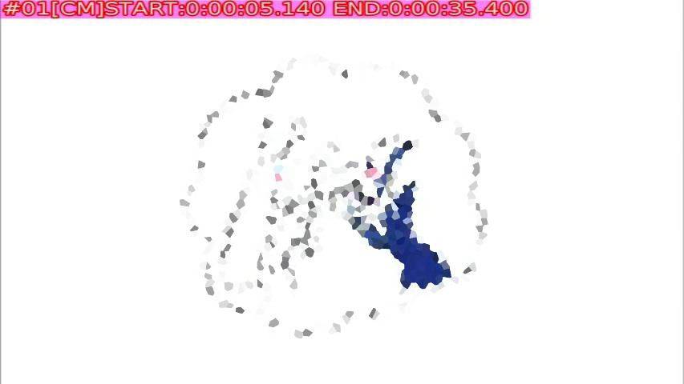
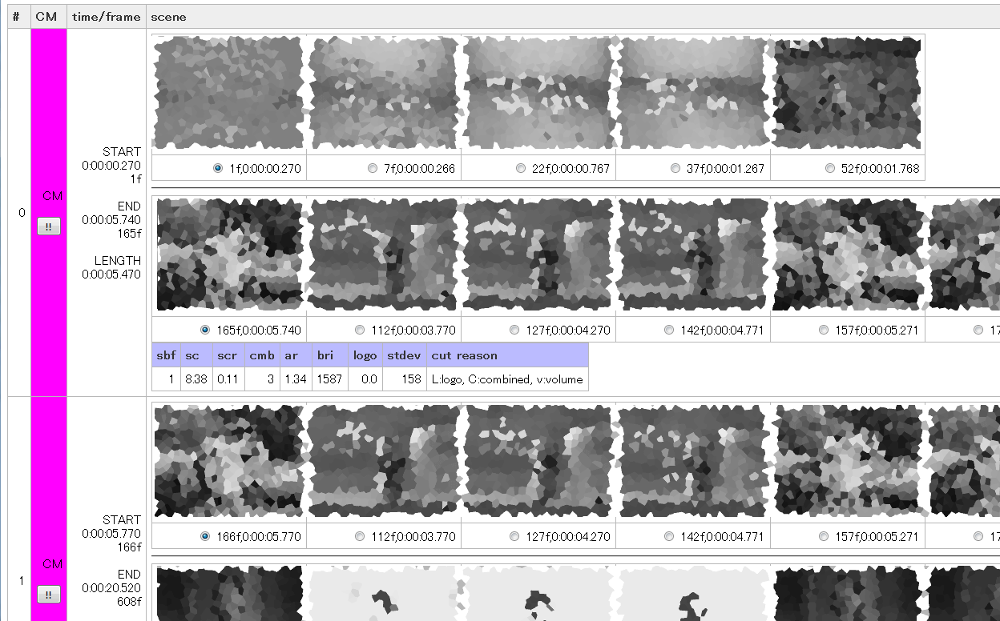

半自動CMカットスクリプトの作成
comskip、色々設定を変えながら試したのですがどうやっても安心して任せられる設定にすることは無理だという結論になりました。 かといっていちいち1ファイルずつちまちまとCMカット作業をしたくはありません。comskipである程度は検出できているのですから。 そうなると次は「人間が確認しつつ、楽をする」ようにしたくなります。そこでcomskipの仕組みを考慮しながら、 pythonやらJavascriptやら使ってCMカット環境を構築してみました。
概要
TS録画する→comskipで処理する→comskipのログからブロックを抽出→可視化→目視で確認・修正してカットスクリプトを生成→ffmpegでカット
ポイントはcomskipの最終結果であるCM判定を当てにしないで、ブロック単位で可視化して誤判定の修正をするところでしょうか。 可視化の方法として、エンコードしたMP4に判定結果を埋め込んで閲覧しながら確認できるバージョンと、HTMLでサムネイルを見ながら確認する バージョンの2通りを作成しました。 ただし、カットスクリプトの生成ができるのはHTMLバージョンだけです。
事前検討
基本アイデア
まず、comskipをある程度設定してあれば、「ブロックへの分割」まではそこそこ上手くいくことを期待しておきます。 問題なのは、それぞれのブロックをCMか本編かに分類するときに誤判定があって、時に致命的な間違いを犯すことです。
comskipのフレーム→ブロック→CM検出の仕組みを大雑把に図にするとこんな感じです。

前半のブロックへの分割が大体detect_methodで指定しているものだと思います。ちなみに、コードを少し追いかけていて びっくりしたのは、comskipはブロック分割にはロゴの有無を使っていないんですね。ロゴ情報を使うのは後半の、 ブロックを結合したりCM判定したりするところのようです。
繰り返しますが、前半の「ブロックへの分割」までは上手くいっていることを仮定します。ブロック分割に失敗しているような場合は手作業で どうにかすることにします。
UIとしてはHTMLを適当に使うことにします。 Javascriptも使うことでクライアント側に特別なソフトを用意しなくても良いです。 かつ、HTMLにdata urlでサムネイル画像を埋め込んで1ファイルで完結するようにもできます。 comskipのログは.logを適当に文字列処理で解析すれば良いので、手馴れた言語であるPythonを使うことにします。 TSからのサムネイル抜き出し方法と、判定結果を目視から修正した結果を使ったカット＆結合の方法が課題です。
技術検討(サムネイル切り出し)
まず、TSからサムネイルを切り出す方法として考えたのが以下の2通りです。
- ffmpegのコマンドをたたく
- ffmpegのライブラリをラップしたpythonパッケージを使う
1.のコマンドをたたくのは何度も何度も呼び出すオーバーヘッドや、一定区間の画像を切り出すときに色々オプション指定が面倒だったりしたので やめておいて、2.のライブラリを使う方法を考えます。ちなみに、ffmpegコマンドを呼び出すpythonラッパーライブラリもあるようですが、今回は 検討していません。
このうち、githubにあるpyffmpegはどちらもgoogle codeのプロジェクトからの移植です。で、どちらも使っているffmpegのAPIが古くて、 ビルドすらできない状態です。がんばってビルドくらいは通るようにしてみたのですが、core dumpするので使い物になりませんでした。 AvpyはAPI不足だったので使えませんでした。最終的にはffmsになりましたが、最初python2で動かそうとしたら色々ハマったので、python3+ffmsが 最終形となりました。
技術検討（TSカット＆結合）
最初はWindowsでもLinuxでも動くAvidemuxのtinypyスクリプトを使って処理しようかと考えていました。 しかし、カット＆結合は動くことには動くのですが、音声ストリームを認識しない動画があったりして微妙に苦労するのでやめました。 最終的にはやっぱりffmpegに頼ることにしました。
ちなみに、（最近の？）ffmpegはドキュメントによると、
Using -ss as input option together with -c:v copy might not be accurate since ffmpeg is forced to only use/split on i-frames.
だそうで、適当に指定した時間からでもIフレームで切ってくれるみたいですね。（逆に、正確に指定した時間で切ってくれないとも言う）
技術検討（その他）
ffmsのpythonパッケージではnumpy配列でフレームのデータが得られるようなので、画像のPNG/JPEG変換としてPillowを使うことにします。 さらに、HTML出力を見通し良く記述するために、テンプレート処理系として定番のJinja2を使うことにします。 そして、コマンドライン処理を手抜きする個人的イチ推しライブラリのclickも使うことにします。
準備
- 録画環境
- comskip
- ffmpeg（--enable-libfreetypeしてあるもの）
- libffms2（Ubuntu14.04だとlibffms2-3、たぶんlibffms2-devも必要）
- python3 numpy Pillow Jinja2 click ** ffms(python binding)
comskipはerikkaashoek/Comskipを使っていますが、別実装でもWine版でもお好きなように。 ffmpegはerikkaashoek/Comskipのubuntu trustyのインストール方法にあるppaを使うのが楽です。 python3のパッケージはシステム全体に入れても良いし、virtualenvとかで独立させても良いです。 ffmsのpython bindingはspirit/ffmsから落としてきてpython3 setup.py installします。
ffmsのpython bindingはドキュメントが無くて苦労しましたが、ipython notebookの補完に頼って色々やってるうちになんとか必要な機能は たたけるようになりました。
コード（ffmpegでエンコード編）
まずはTSをMP4にエンコードしつつ、vfオプションで文字を重ねることで「今見てるシーンはCM(or 本編)と検出されている」ことが 分かるようにしましょう。同時にブロック番号・開始・終了時刻も分かるようにして、こんな感じにします。

エンコード自体はシェルスクリプトなどでやることにして、pythonでは長い長いフィルタコマンドを生成させます。
#!/path/to/python3 # coding: utf-8 import click import datetime def to_timestamp(s): return str(datetime.timedelta(seconds=s))[:-3].replace(':', r'\:') @click.command() @click.argument('logfile', type=click.File("r", encoding="utf-8")) def to_ffvf(logfile): for line in logfile: if line.startswith("Block list after weighing"): break logfile.readline() logfile.readline() blocks = [] for line in logfile: if line == '\n': break block = {} block["no"] = int(line[0:3]) block["isCM"] = (line[4:6] == "--") block["fs"] = int(line[19:26]) block["fe"] = int(line[26:33]) block["ts"] = float(line[33:42]) block["te"] = float(line[43:52]) block["len"] = float(line[53:62]) blocks.append(block) vfs = [] for b in blocks: start = to_timestamp(b["ts"]) end = to_timestamp(b["te"]) if b["isCM"]: vf = "drawtext=fontfile=/usr/share/fonts/truetype/dejavu/DejaVuSans.ttf:x=5:y=5:text='#%02d[CM]START\:%s END\:%s':fontsize=40:fontcolor=magenta@0.4:box=1:boxcolor=white@0.2:borderw=2:bordercolor=red@0.6:enable='gte(n,%f)*lte(n,%f)'" % (b["no"], start, end, b['fs'], b['fe']) else: vf = "drawtext=fontfile=/usr/share/fonts/truetype/dejavu/DejaVuSans.ttf:x=5:y=5:text='#%02d[MV]START\:%s END\:%s':fontsize=40:fontcolor=limegreen@0.4:box=1:boxcolor=white@0.2:borderw=2:bordercolor=green@0.6:enable='gte(n,%f)*lte(n,%f)'" % (b["no"], start, end, b["fs"], b["fe"]) vfs.append(vf) click.echo(",".join(vfs)) if __name__ == '__main__': to_ffvf()
このコマンドをcomskipのログファイルを引数にして呼び出すと、こんな出力が得られます。
:がffmpegのフィルタオプションの分割文字なので、エスケープしているところが注意点でしょうか。
drawtext=fontfile=/usr/share/fonts/truetype/dejavu/DejaVuSans.ttf:x=5:y=5:text='#00[CM]START\:0\:00\:00.500 END\:0\:00\:05.340':fontsize=40:fontcolor=magenta@0.4:box=1:boxcolor=white@0.2:borderw=2:bordercolor=red@0.6:enable='gte(n,1.000000)*lte(n,146.000000)',drawtext=fontfile=/usr/share/fonts/truetype/dejavu/DejaVuSans.ttf:x=5:y=5:text='#01[CM]START\:0\:00\:05.370 END\:0\:00\:35.440':fontsize=40:fontcolor=magenta@0.4:box=1:boxcolor=white@0.2:borderw=2:bordercolor=red@0.6:enable='gte(n,147.000000)*lte(n,1048.000000)',drawtext=fontfile=/usr/share/fonts/truetype/dejavu/DejaVuSans.ttf:x=5:y=5:text='#02[CM]START\:0\:00\:35.470 END\:0\:00\:50.450':fontsize=40:fontcolor=magenta@0.4:box=1:boxcolor=white@0.2:borderw=2:bordercolor=red@0.6:enable='gte(n,1049.000000)*lte(n,1498.000000)',drawtext=fontfile=/usr/share/fonts/truetype/dejavu/DejaVuSans.ttf:x=5:y=5:text='#03[CM]START\:0\:00\:50.480 END\:0\:01\:05.500':fontsize=40:fontcolor=magenta@0.4:box=1:boxcolor=white@0.2:borderw=2:bordercolor=red@0.6:enable='gte(n,1499.000000)*lte(n,1949.000000)',drawtext=fontfile=/usr/share/fonts/truetype/dejavu/DejaVuSans.ttf:x=5:y=5:text='#04[CM]START\:0\:01\:05.530 END\:0\:01\:20.480':fontsize=40:fontcolor=magenta@0.4:box=1:boxcolor=white@0.2:borderw=2:bordercolor=red@0.6:enable='gte(n,1950.000000)*lte(n,2398.000000)',drawtext=fontfile=/usr/share/fonts/truetype/dejavu/DejaVuSans.ttf:x=5:y=5:text='#05[CM]START\:0\:01\:20.510 END\:0\:01\:35.460':fontsize=40:fontcolor=magenta@0.4:box=1:boxcolor=white@0.2:borderw=2:bordercolor=red@0.6:enable='gte(n,2399.000000)*lte(n,2847.000000)',drawtext=fontfile=/usr/share/fonts/truetype/dejavu/DejaVuSans.ttf:x=5:y=5:text='#06[CM]START\:0\:01\:35.500 END\:0\:03\:09.890':fontsize=40:fontcolor=magenta@0.4:box=1:boxcolor=white@0.2:borderw=2:bordercolor=red@0.6:enable='gte(n,2848.000000)*lte(n,5677.000000)',drawtext=fontfile=/usr/share/fonts/truetype/dejavu/DejaVuSans.ttf:x=5:y=5:text='#07[CM]START\:0\:03\:09.920 END\:0\:03\:16.530':fontsize=40:fontcolor=magenta@0.4:box=1:boxcolor=white@0.2:borderw=2:bordercolor=red@0.6:enable='gte(n,5678.000000)*lte(n,5876.000000)',drawtext=fontfile=/usr/share/fonts/truetype/dejavu/DejaVuSans.ttf:x=5:y=5:text='#08[CM]START\:0\:03\:16.560 END\:0\:03\:30.480':fontsize=40:fontcolor=magenta@0.4:box=1:boxcolor=white@0.2:borderw=2:bordercolor=red@0.6:enable='gte(n,5877.000000)*lte(n,6294.000000)',drawtext=fontfile=/usr/share/fonts/truetype/dejavu/DejaVuSans.ttf:x=5:y=5:text='#09[CM]START\:0\:03\:30.510 END\:0\:03\:45.430':fontsize=40:fontcolor=magenta@0.4:box=1:boxcolor=white@0.2:borderw=2:bordercolor=red@0.6:enable='gte(n,6295.000000)*lte(n,6742.000000)',drawtext=fontfile=/usr/share/fonts/truetype/dejavu/DejaVuSans.ttf:x=5:y=5:text='#10[CM]START\:0\:03\:45.460 END\:0\:04\:12.850':fontsize=40:fontcolor=magenta@0.4:box=1:boxcolor=white@0.2:borderw=2:bordercolor=red@0.6:enable='gte(n,6743.000000)*lte(n,7564.000000)',drawtext=fontfile=/usr/share/fonts/truetype/dejavu/DejaVuSans.ttf:x=5:y=5:text='#11[CM]START\:0\:04\:12.890 END\:0\:04\:15.360':fontsize=40:fontcolor=magenta@0.4:box=1:boxcolor=white@0.2:borderw=2:bordercolor=red@0.6:enable='gte(n,7565.000000)*lte(n,7639.000000)',drawtext=fontfile=/usr/share/fonts/truetype/dejavu/DejaVuSans.ttf:x=5:y=5:text='#12[CM]START\:0\:04\:15.390 END\:0\:04\:30.400':fontsize=40:fontcolor=magenta@0.4:box=1:boxcolor=white@0.2:borderw=2:bordercolor=red@0.6:enable='gte(n,7640.000000)*lte(n,8090.000000)',drawtext=fontfile=/usr/share/fonts/truetype/dejavu/DejaVuSans.ttf:x=5:y=5:text='#13[CM]START\:0\:04\:30.440 END\:0\:04\:45.450':fontsize=40:fontcolor=magenta@0.4:box=1:boxcolor=white@0.2:borderw=2:bordercolor=red@0.6:enable='gte(n,8091.000000)*lte(n,8541.000000)',drawtext=fontfile=/usr/share/fonts/truetype/dejavu/DejaVuSans.ttf:x=5:y=5:text='#14[CM]START\:0\:04\:45.490 END\:0\:05\:00.470':fontsize=40:fontcolor=magenta@0.4:box=1:boxcolor=white@0.2:borderw=2:bordercolor=red@0.6:enable='gte(n,8542.000000)*lte(n,8991.000000)',drawtext=fontfile=/usr/share/fonts/truetype/dejavu/DejaVuSans.ttf:x=5:y=5:text='#15[CM]START\:0\:05\:00.500 END\:0\:05\:15.450':fontsize=40:fontcolor=magenta@0.4:box=1:boxcolor=white@0.2:borderw=2:bordercolor=red@0.6:enable='gte(n,8992.000000)*lte(n,9440.000000)',drawtext=fontfile=/usr/share/fonts/truetype/dejavu/DejaVuSans.ttf:x=5:y=5:text='#16[CM]START\:0\:05\:15.480 END\:0\:05\:30.500':fontsize=40:fontcolor=magenta@0.4:box=1:boxcolor=white@0.2:borderw=2:bordercolor=red@0.6:enable='gte(n,9441.000000)*lte(n,9891.000000)',drawtext=fontfile=/usr/share/fonts/truetype/dejavu/DejaVuSans.ttf:x=5:y=5:text='#17[CM]START\:0\:05\:30.530 END\:0\:05\:35.840':fontsize=40:fontcolor=magenta@0.4:box=1:boxcolor=white@0.2:borderw=2:bordercolor=red@0.6:enable='gte(n,9892.000000)*lte(n,10051.000000)',drawtext=fontfile=/usr/share/fonts/truetype/dejavu/DejaVuSans.ttf:x=5:y=5:text='#18[MV]START\:0\:05\:35.870 END\:0\:08\:21.300':fontsize=40:fontcolor=limegreen@0.4:box=1:boxcolor=white@0.2:borderw=2:bordercolor=green@0.6:enable='gte(n,10052.000000)*lte(n,15010.000000)',drawtext=fontfile=/usr/share/fonts/truetype/dejavu/DejaVuSans.ttf:x=5:y=5:text='#19[MV]START\:0\:08\:21.330 END\:0\:11\:32.460':fontsize=40:fontcolor=limegreen@0.4:box=1:boxcolor=white@0.2:borderw=2:bordercolor=green@0.6:enable='gte(n,15011.000000)*lte(n,20739.000000)',drawtext=fontfile=/usr/share/fonts/truetype/dejavu/DejaVuSans.ttf:x=5:y=5:text='#20[MV]START\:0\:11\:32.490 END\:0\:16\:22.180':fontsize=40:fontcolor=limegreen@0.4:box=1:boxcolor=white@0.2:borderw=2:bordercolor=green@0.6:enable='gte(n,20740.000000)*lte(n,29422.000000)',drawtext=fontfile=/usr/share/fonts/truetype/dejavu/DejaVuSans.ttf:x=5:y=5:text='#21[MV]START\:0\:16\:22.210 END\:0\:18\:17.260':fontsize=40:fontcolor=limegreen@0.4:box=1:boxcolor=white@0.2:borderw=2:bordercolor=green@0.6:enable='gte(n,29423.000000)*lte(n,32871.000000)',drawtext=fontfile=/usr/share/fonts/truetype/dejavu/DejaVuSans.ttf:x=5:y=5:text='#22[CM]START\:0\:18\:17.300 END\:0\:18\:32.440':fontsize=40:fontcolor=magenta@0.4:box=1:boxcolor=white@0.2:borderw=2:bordercolor=red@0.6:enable='gte(n,32872.000000)*lte(n,33326.000000)',drawtext=fontfile=/usr/share/fonts/truetype/dejavu/DejaVuSans.ttf:x=5:y=5:text='#23[CM]START\:0\:18\:32.480 END\:0\:18\:47.490':fontsize=40:fontcolor=magenta@0.4:box=1:boxcolor=white@0.2:borderw=2:bordercolor=red@0.6:enable='gte(n,33327.000000)*lte(n,33777.000000)',drawtext=fontfile=/usr/share/fonts/truetype/dejavu/DejaVuSans.ttf:x=5:y=5:text='#24[CM]START\:0\:18\:47.530 END\:0\:19\:02.410':fontsize=40:fontcolor=magenta@0.4:box=1:boxcolor=white@0.2:borderw=2:bordercolor=red@0.6:enable='gte(n,33778.000000)*lte(n,34224.000000)',drawtext=fontfile=/usr/share/fonts/truetype/dejavu/DejaVuSans.ttf:x=5:y=5:text='#25[CM]START\:0\:19\:02.440 END\:0\:19\:17.420':fontsize=40:fontcolor=magenta@0.4:box=1:boxcolor=white@0.2:borderw=2:bordercolor=red@0.6:enable='gte(n,34225.000000)*lte(n,34674.000000)',drawtext=fontfile=/usr/share/fonts/truetype/dejavu/DejaVuSans.ttf:x=5:y=5:text='#26[CM]START\:0\:19\:17.460 END\:0\:19\:32.440':fontsize=40:fontcolor=magenta@0.4:box=1:boxcolor=white@0.2:borderw=2:bordercolor=red@0.6:enable='gte(n,34675.000000)*lte(n,35124.000000)',drawtext=fontfile=/usr/share/fonts/truetype/dejavu/DejaVuSans.ttf:x=5:y=5:text='#27[CM]START\:0\:19\:32.470 END\:0\:19\:47.450':fontsize=40:fontcolor=magenta@0.4:box=1:boxcolor=white@0.2:borderw=2:bordercolor=red@0.6:enable='gte(n,35125.000000)*lte(n,35574.000000)',drawtext=fontfile=/usr/share/fonts/truetype/dejavu/DejaVuSans.ttf:x=5:y=5:text='#28[CM]START\:0\:19\:47.490 END\:0\:20\:17.420':fontsize=40:fontcolor=magenta@0.4:box=1:boxcolor=white@0.2:borderw=2:bordercolor=red@0.6:enable='gte(n,35575.000000)*lte(n,36472.000000)',drawtext=fontfile=/usr/share/fonts/truetype/dejavu/DejaVuSans.ttf:x=5:y=5:text='#29[CM]START\:0\:20\:17.450 END\:0\:20\:32.560':fontsize=40:fontcolor=magenta@0.4:box=1:boxcolor=white@0.2:borderw=2:bordercolor=red@0.6:enable='gte(n,36473.000000)*lte(n,36926.000000)',drawtext=fontfile=/usr/share/fonts/truetype/dejavu/DejaVuSans.ttf:x=5:y=5:text='#30[MV]START\:0\:20\:32.600 END\:0\:27\:34.690':fontsize=40:fontcolor=limegreen@0.4:box=1:boxcolor=white@0.2:borderw=2:bordercolor=green@0.6:enable='gte(n,36927.000000)*lte(n,49577.000000)',drawtext=fontfile=/usr/share/fonts/truetype/dejavu/DejaVuSans.ttf:x=5:y=5:text='#31[CM]START\:0\:27\:34.720 END\:0\:29\:04.940':fontsize=40:fontcolor=magenta@0.4:box=1:boxcolor=white@0.2:borderw=2:bordercolor=red@0.6:enable='gte(n,49578.000000)*lte(n,52282.000000)',drawtext=fontfile=/usr/share/fonts/truetype/dejavu/DejaVuSans.ttf:x=5:y=5:text='#32[CM]START\:0\:29\:04.980 END\:0\:29\:20.460':fontsize=40:fontcolor=magenta@0.4:box=1:boxcolor=white@0.2:borderw=2:bordercolor=red@0.6:enable='gte(n,52283.000000)*lte(n,52747.000000)',drawtext=fontfile=/usr/share/fonts/truetype/dejavu/DejaVuSans.ttf:x=5:y=5:text='#33[CM]START\:0\:29\:20.490 END\:0\:29\:35.470':fontsize=40:fontcolor=magenta@0.4:box=1:boxcolor=white@0.2:borderw=2:bordercolor=red@0.6:enable='gte(n,52748.000000)*lte(n,53197.000000)',drawtext=fontfile=/usr/share/fonts/truetype/dejavu/DejaVuSans.ttf:x=5:y=5:text='#34[CM]START\:0\:29\:35.510 END\:0\:29\:50.460':fontsize=40:fontcolor=magenta@0.4:box=1:boxcolor=white@0.2:borderw=2:bordercolor=red@0.6:enable='gte(n,53198.000000)*lte(n,53646.000000)',drawtext=fontfile=/usr/share/fonts/truetype/dejavu/DejaVuSans.ttf:x=5:y=5:text='#35[CM]START\:0\:29\:50.490 END\:0\:29\:56.230':fontsize=40:fontcolor=magenta@0.4:box=1:boxcolor=white@0.2:borderw=2:bordercolor=red@0.6:enable='gte(n,53647.000000)*lte(n,53820.000000)'
この長い長い文字列をffmpegの-vfオプションと共に渡してやって、他の適当なエンコードオプションを指定してエンコードすることによって、動画上でブロック番号・開始・終了時刻・CM/本編(MV)が分かるようになります。
コード（HTML編）
上記で作成した動画を見て、「あー、今日は盛大に誤爆ってOPがCMにされてるなー」とか「ブロック分割は大体大丈夫かなー」とアタリを付けたら、次のスクリプトで 生成するHTMLを使って、カット＆結合スクリプトを修正していきます。
#!/home/chinachu/chinachu-scripts/utils/py3/env3/bin/python # coding: utf-8 import base64 import datetime from io import BytesIO import os.path import sys import click import ffms from PIL import Image import jinja2 def to_timestamp(seconds): td = datetime.timedelta(seconds=seconds) return str(td)[:-3] class FFMSVideo: def __init__(self, videofile): self.vs = ffms.VideoSource(videofile, num_threads=1) self.keyframes = self.vs.track.keyframes def _get_img_by_frame(self, frame): h = frame.EncodedHeight w = int(frame.planes[0].shape[0] / h) img = Image.fromarray(frame.planes[0].reshape(h, w)) return img.crop(box=(0, 0, frame.EncodedWidth, frame.EncodedHeight)) def get_frame_img(self, number, scale=None, dataurl=False): if number < 0: number = 0 if number >= self.vs.properties.NumFrames: number = self.vs.properties.NumFrames - 1 try: frame = self.vs.get_frame(number) except ffms.Error as e: click.echo("number: %d" % number, err=True) click.echo(str(e), err=True) raise e img = self._get_img_by_frame(frame) if scale: img = img.resize((int(img.width * scale), int(img.height * scale))) if dataurl: f = BytesIO() img.save(f, "PNG") return 'data:img/png;base64,' + base64.b64encode(f.getvalue()).decode('utf-8').replace('\n', '') return img def get_near_keyframes(self, frame, delta=60): return [x for x in self.keyframes if frame - delta <= x <= frame + delta] def get_pts(self, frame): info = self.vs.track.frame_info_list[frame] return (info.PTS - self.vs.track.frame_info_list[0].PTS) * self.vs.track.time_base.Num / (self.vs.track.time_base.Den * 1000) class ComSkipResult: def __init__(self, videofile): if not os.path.exists(videofile): raise "videofile: %s not found" % videofile self.video = FFMSVideo(videofile) self.videofile = videofile (basename, ext) = os.path.splitext(videofile) self.basename = basename log = "%s.log" % basename if os.path.exists(log): with open(log) as f: for line in f: if line.startswith("Block list after weighing"): break f.readline() f.readline() self.blocks = [] for line in f: if line == "\n": break block = {} block["no"] = int(line[0:3]) block["isCM"] = (line[4:6] == "--") block["sbf"] = int(line[6:11]) block["bs"] = int(line[11:15]) block["be"] = int(line[15:19]) block["fs"] = int(line[19:26]) block["fe"] = int(line[26:33]) block["ts"] = float(line[33:42]) block["te"] = float(line[43:52]) block["len"] = float(line[53:62]) block["sc"] = float(line[63:70]) block["scr"] = float(line[70:76]) block["cmb"] = int(line[76:80]) block["ar"] = float(line[80:85]) cut = line[96:106] block["bri"] = int(line[107:113]) block["bricode"] = line[113] block["logo"] = float(line[115:119]) block["vol"] = int(line[120:124]) block["volcode"] = line[124] block["sil"] = int(line[125:128]) block["silcode"] = line[128] block["corr"] = float(line[130:136]) block["stdev"] = int(line[137:142]) block["cc"] = line[143:] block["line"] = line cutreason = [] r = {"F": "F:scene", "A": "A:aspect", "E": "E:exceeds", "L": "L:logo", "B": "B:bright", "C": "C:combined", "N": "N:nonstrict", "S": "S:strict", "c": "c:change", "t": "t:cutscene", "l": "l:logo", "v": "v:volume", "s": "s:scene_change", "a": "a:aspect_ratio", "u": "u:uniform_frame", "b": "b:black_frame", "r": "r:resolution"} for c in cut: if c in r: cutreason.append(r[c]) block["cut"] = ", ".join(cutreason) self.blocks.append(block) def to_html(self): tmpl_env = jinja2.Environment(loader=jinja2.FileSystemLoader(os.path.dirname(sys.argv[0])), autoescape=False) tmpl = tmpl_env.get_template("tmpl.j2") tmpl_vars = {"videofile": self.videofile, "comskip": self, "to_timestamp": to_timestamp} with open(self.basename + ".html", "w") as f: f.write(tmpl.render(tmpl_vars)) @click.command() @click.argument('videofile', type=click.Path(exists=True)) def to_html(videofile): comskip = ComSkipResult(videofile) comskip.to_html() if __name__ == '__main__': to_html()
HTML生成のために読み込んでいるJinja2テンプレート（tmpl.j2）は以下の通り。
<!DOCTYPE html> <html lang="ja"> <head> <meta charset="UTF-8"> <title>{{ videofile }}</title> <style type="text/css"> .blocks { border-collapse: collapse; } .blocks th { padding: 6px; text-align: left; color: #333; background-color: #eee; border: 1px solid #b9b9b9; } .blocks td { padding: 6px; text-align: right; background-color: #fff; border: 1px solid #b9b9b9; } .blocks td.CM { background-color: #f0f; } .blocks td.MV { background-color: #0f0; } .props { border-collapse: collapse; } .props th { background-color: #bbf; } span.changed { text-decoration: line-through; } .thums { border-collapse: collapse; } textarea { width: 80%; height: 10em; } </style> <script src="https://code.jquery.com/jquery-1.11.3.min.js"></script> <script type="text/javascript"> var blocks = []; {% for b in comskip.blocks %} blocks.push({ no: {{ b.no }}, isCM: {{ "true" if b.isCM else "false" }}, fs: {{ b.fs }}, fe: {{ b.fe }}, ts: {{ b.ts }}, te: {{ b.te }} }); {% endfor %} </script> </head> <body> <table class="blocks"> <thead> <tr> <th>#</th> <th>CM</th> <th>time/frame</th> <th>scene</th> </tr> </thead> <tbody> {% for b in comskip.blocks %} <tr> <td>{{ b.no }}</td> <td class="{{ "CM" if b.isCM else "MV" }}" id="{{ b.no }}"><span class="orig">{{ "CM" if b.isCM else "MV" }}</span><br /><span class="mod"></span><br /><button class="changeCM">!!</button></td> <td> START<br />{{ to_timestamp(b.ts) }}<br />{{ b.fs }}f<br /><br /> END<br />{{ to_timestamp(b.te) }}<br />{{ b.fe }}f<br /><br /> LENGTH<br />{{ to_timestamp(b.len) }}<br /> </td> <td style="text-align: left"> <table class="thums"> <tr> <td><img src="{{ comskip.video.get_frame_img(b.fs, scale=1/8, dataurl=True) }}" /></td> {% for k in comskip.video.get_near_keyframes(b.fs) %} <td><img src="{{ comskip.video.get_frame_img(k, scale=1/8, dataurl=True) }}" /></td> {% endfor %} </tr> <tr> <td><input type="RADIO" class="fs" name="fs{{b.no}}" value="{{b.fs}}" data-no="{{b.no}}" data-f="{{b.fs}}" data-t="{{b.ts}}" checked="checked"/> {{b.fs}}f,{{ to_timestamp(b.ts) }} </td> {% for k in comskip.video.get_near_keyframes(b.fs) %} <td><input type="RADIO" class="fs" name="fs{{b.no}}" value="{{k}}" data-no="{{b.no}}" data-f="{{k}}" data-t="{{comskip.video.get_pts(k)}}"/> {{k}}f,{{ to_timestamp(comskip.video.get_pts(k)) }} </td> {% endfor %} </tr> </table> <hr /> <table class="thums"> <tr> <td><img src="{{ comskip.video.get_frame_img(b.fe, scale=1/8, dataurl=True) }}" /></td> {% for k in comskip.video.get_near_keyframes(b.fe) %} <td><img src="{{ comskip.video.get_frame_img(k, scale=1/8, dataurl=True) }}" /></td> {% endfor %} </tr> <tr> <td><input type="RADIO" class="fe" name="fe{{b.no}}" value="{{b.fe}}" data-no="{{b.no}}" data-f="{{b.fe}}" data-t="{{b.te}}" checked="checked"/> {{b.fe}}f,{{ to_timestamp(b.te) }} </td> {% for k in comskip.video.get_near_keyframes(b.fe) %} <td><input type="RADIO" class="fe" name="fe{{b.no}}" value="{{k}}" data-no="{{b.no}}" data-f="{{k}}" data-t="{{comskip.video.get_pts(k)}}"/> {{k}}f,{{ to_timestamp(comskip.video.get_pts(k)) }} </td> {% endfor %} </tr> </table> <table class="props"> <thead> <th>sbf</th> <th>sc</th> <th>scr</th> <th>cmb</th> <th>ar</th> <th>bri</th> <th>logo</th> <th>stdev</th> <th>cut reason</th> </thead> <tbody> <td>{{ b.sbf }}</td> <td>{{ b.sc }}</td> <td>{{ b.scr }}</td> <td>{{ b.cmb }}</td> <td>{{ b.ar }}</td> <td>{{ b.bri }}</td> <td>{{ b.logo }}</td> <td>{{ b.stdev }}</td> <td>{{ b.cut }}</td> </tbody> </table> </td> </tr> {% endfor %} </tbody> </table> <button id="gen">生成</button> <textarea id="py"> </textarea> <textarea id="ffmpeg"> </textarea> <script type="text/javascript"> $(document).ready(function(){ $("button#gen").click(function(){ var py = "#PY\nadm = Avidemux()\neditor = Editor()\nadm.clearSegments()\n"; var ffmpeg = "#!/bin/bash\nffmpeg=/usr/bin/ffmpeg\nm2ts='{{ videofile }}'\nbn=${m2ts%.*}\n\n" + 'rm "${bn}.list.txt"\n\n'; var segments = []; var seg_start = -1; var seg_start_t = -1; var last_fe = -1; var last_te = -1; var i; for (i = 0; i < blocks.length; i++) { if (seg_start == -1 && !blocks[i]["isCM"]) { seg_start = blocks[i]["fs"]; seg_start_t = blocks[i]["ts"]; } else if (seg_start != -1 && blocks[i]["isCM"]) { segments.push({s: seg_start, e: last_fe, ts: seg_start_t, te: last_te}); seg_start = -1; } last_fe = blocks[i]["fe"]; last_te = blocks[i]["te"]; } if (seg_start != -1) { segments.push({s: seg_start, e: last_fe, ts: seg_start_t, te: last_te}); } for (i = 0; i < segments.length; i++) { var s = segments[i]["s"]; var e = segments[i]["e"]; var ts = segments[i]["ts"]; var te = segments[i]["te"]; py += "adm.addSegment(0, editor.getPts(" + s + "), editor.getPts(" + e + ") - editor.getPts(" + s + "))\n"; ffmpeg += '$ffmpeg -i "$m2ts" -ss ' + ts + ' -to ' + te + ' -c:v copy -c:a copy -y "${bn}.chapter' + i + '.m2ts"\n'; ffmpeg += 'echo file "\'${bn}.chapter' + i + '.m2ts\'" >> "${bn}.list.txt"\n\n'; } ffmpeg += '$ffmpeg -f concat -i "${bn}.list.txt" -c copy "${bn}.nocm.m2ts"\n'; $("textarea#py").val(py); $("textarea#ffmpeg").val(ffmpeg); }); $("button.changeCM").click(function(){ var td = $(this).parent(); td.toggleClass("CM"); td.toggleClass("MV"); var span_orig = td.children(".orig"); span_orig.toggleClass("changed"); var span_mod = td.children(".mod"); if (span_mod.text() === "") { if (span_orig.text() === "CM") { span_mod.text("MV"); } else { span_mod.text("CM"); } } else { span_mod.text(""); } var idx = parseInt(td.attr("id")); blocks[idx]["isCM"] = !blocks[idx]["isCM"]; }); $("input.fs:radio").change(function(){ var idx = $(this).data("no"); var fs = $(this).data("f"); var ts = $(this).data("t"); blocks[idx]["fs"] = fs; blocks[idx]["ts"] = ts; }); $("input.fe:radio").change(function(){ var idx = $(this).data("no"); var fe = $(this).data("f"); var te = $(this).data("t"); blocks[idx]["fe"] = fe; blocks[idx]["te"] = te; }); }); </script> </body> </html>
出力されるHTMLには謎の文字列（data url）が埋め込まれているので、ブラウザで開くと以下のような画面が出ます。

左の「CM」という列がこのブロックがCMとして検出されたことを示しています。「!!」ボタンを押すことでCM/本編を反転させることができます。 ブロック分割が微妙にうまくいってなくて開始/終了がずれてるなー、という場合は、右のラジオボタンから適当なフレームを選択することで そこを開始/終了にすることもできます。
画面には映っていませんが、下の方に「生成」ボタンがあり、押すとAvidemuxのPYファイル（名残り）とffmpegを呼び出しまくるシェルスクリプト（本命）が テキストエリアに出力されます。
ファイルシステムに保存したりする機能は無いので、適当にコピペしてやることで、自分で修正したブロックが本編として残ったTSファイルを得ることができます。